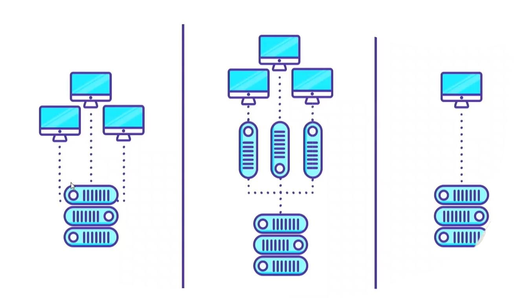

Tipos de Servidores
Nós temos 3 tipos principais de Servidores:

- Servidor Compartilhado(hospedagem compartilhada): cada máquina ele vai atender a vários clientes.Esse tipo de hospedagem
é a mais barata, eles não consomem muitos recursos do servidor, geralmente sites estáticos.
- VPS: roda maquinas virtuais, para cada um dos clientes. Eles não são servidores de fato, mas são SO que rodam dentro
de outra máquina. Valor intermediário, para quem tem uma aplicação de médio porte , e quer uma opção mais barata.
- Servidor dedicado: onde temos uma ou várias máquinas dedicada a apenas um cliente. Possui custo mais alto.